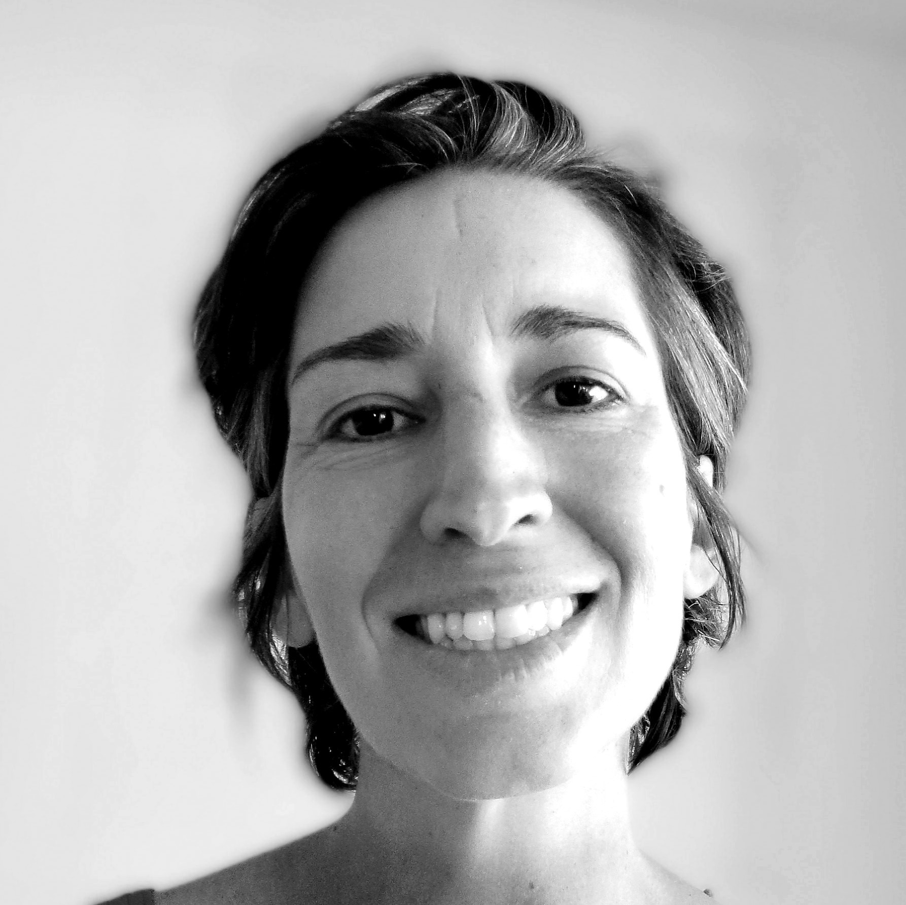
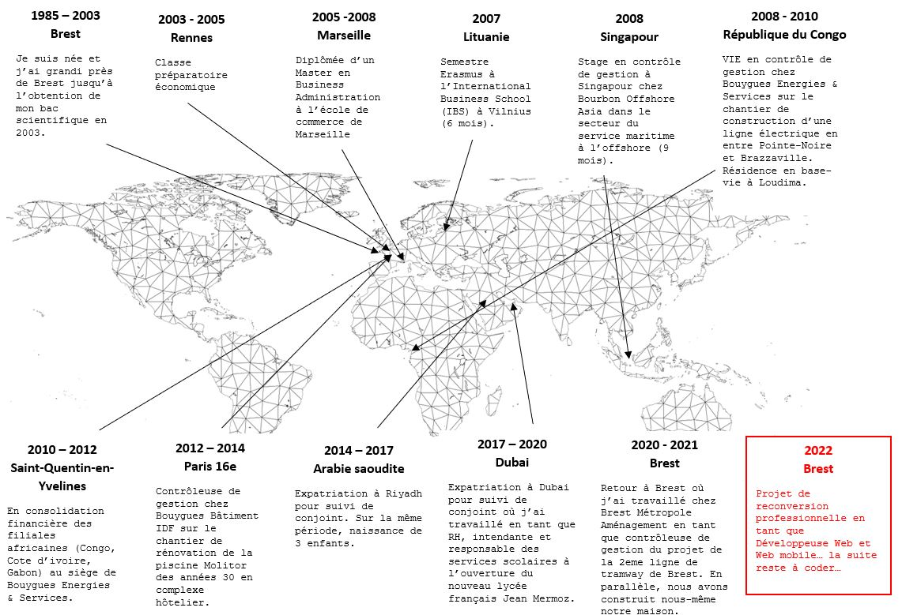

Bonjour! Je m'appelle Lauriane Maurer et je veux devenir développeuse Web et Web mobile.
Bienvenue sur ma page. Pour découvrir mon parcours et savoir pourquoi je veux devenir développeur, la visite commence ici...
Bienvenue sur ma page. Pour découvrir mon parcours et savoir pourquoi je veux devenir développeur, la visite commence ici...
Vous trouverez ci-dessous une carte qui résume mon parcours en France et à l’étranger. Depuis Janvier 2022, intéressée par le domaine du numérique et attirée par l’apprentissage du code, je me suis lancée dans le nouveau projet d’une reconversion professionnelle en tant que développeuse web et web mobile afin de découvrir de nouveaux horizons.
